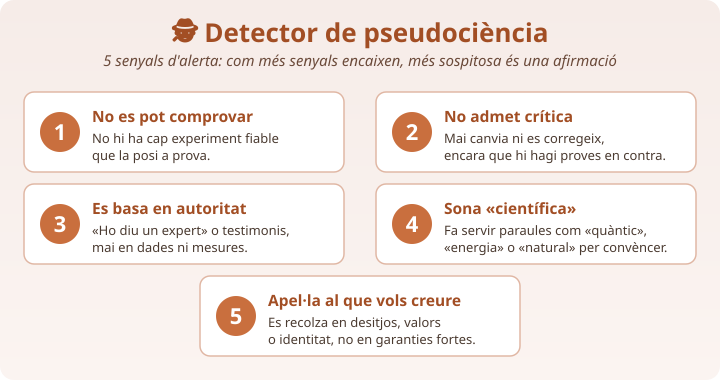
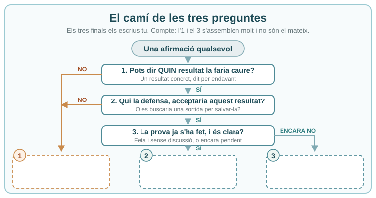

✏️ 1. El meu cas és… i el meu veredicte és (ciència / pseudociència / encara no comprovat):
✏️ 2. Objecció que em posaria qui hi creu, i la meva resposta:

Objecció 1 (garantia: ________) i la meva rèplica:
Objecció 2 (garantia: ________) i la meva rèplica:
🗣️ Com es fa: les rondes es fan en grups d'unes 8 persones alhora, no davant de tota la classe: així tothom defensa i tothom escolta de prop. Anota una fila per cada company del teu grup. Aquest full es recull al final de la sessió: és l'única prova de com has escoltat.
Mentre escoltes, anota el cas i el vot, i després la part que et toca a tu: en quina garantia es basa qui defensaria aquell cas i per què no n'hi ha prou.
| Company i cas + el meu vot: C · P · NC | La garantia en què es basa qui hi creu, i per què no n'hi ha prou | La millora concreta que li proposo |
|---|---|---|
La primera fila és fàcil i hi és per agafar el ritme: col·loca-la de pressa, amb un motiu de mitja línia. Les cinc següents són casos de frontera, on hi ha gent formada que discrepa. Per a cadascuna: digues a quin dels tres calaixos va i per què. Si el cas es parteix (la promesa va a un calaix i l'explicació que en dona a un altre), digues-ho: partir el cas és una resposta correcta.
Els tres calaixos. CIÈNCIA: es pot posar a prova i admet que la corregeixin. PSEUDOCIÈNCIA: promet sense proves —o malgrat les proves en contra— i es tanca a la crítica. ENCARA NO COMPROVAT: es pot posar a prova i acceptaria la resposta, però encara no s'ha fet o els resultats encara no són clars (uns estudis diuen una cosa i altres una altra). ⚠️ Compte: una afirmació que s'ha comprovat i ha sortit FALSA també és del calaix de la CIÈNCIA — la ciència també serveix per dir que no. El que la trauria del calaix és que qui la defensa no acceptés aquell resultat.
| Cas | El que s'afirma | Quin calaix? si el parteixes, escriu les dues parts | Per què? Si dubtes, digues què caldria saber |
|---|---|---|---|
| Cristalls i mal de cap fàcil | Portar un cristall de quars a la butxaca treu el mal de cap. Ningú no ho ha mesurat mai; i quan a algú no li passa el mal, la resposta és que el cristall «encara s'està sintonitzant amb tu». | ||
| Acupuntura frontera | Clavar agulles en punts concrets treu el mal d'esquena, perquè hi circula un flux vital que es desbloqueja. S'ha posat a prova moltes vegades. Alguns pacients milloren del dolor — però milloren igual si les agulles es claven en punts equivocats. Davant d'aquest resultat, qui la practica no canvia els punts: diu que l'efecte de les agulles «va més enllà del que es pot mesurar». | ||
| Vitamina C i refredats frontera | Prendre vitamina C evita els refredats. S'ha assajat amb milers de persones: als qui la prenen cada dia el refredat els dura una mica menys, però no en tenen menys. Els equips que ho han estudiat han publicat aquest resultat encara que no fos el que esperaven, i ara ho diuen així: «no els evita, els escurça una mica». | ||
| Plantes medicinals frontera | Les plantes curen perquè porten la força vital de la terra. De l'escorça del salze en va sortir l'aspirina, que sí que s'ha comprovat que treu el dolor; però de la «força vital» no se n'ha pogut mesurar mai res. I la digitalis (la didalera, una planta de jardí) en dosi alta atura el cor. | ||
| Pantalles i concentració frontera | Passar moltes hores davant de pantalles fa que costi més concentrar-se. Hi ha estudis en marxa amb resultats que no coincideixen; els equips discrepen, van publicant dades noves i diuen que pot acabar sortint que no. | ||
| Grafologia frontera | La lletra manuscrita revela la personalitat. Quan se'ls han donat escrits sense saber de qui eren, els grafòlegs no han encertat més sovint que si haguessin contestat tirant una moneda — i segueixen fent-ho igual. |
Fins ara has decidit el calaix mirant si el cas es pot posar a prova i si admet que el corregeixin. Tot això es pot reordenar en un camí de tres passos, i el primer és el que ho decideix gairebé tot: quin resultat concret faria que abandonéssim aquesta afirmació? Una prova concreta diu qui es compara amb qui i què es mesura — «fer un estudi» no és una prova concreta.

Abans de començar: al diagrama hi ha tres finals numerats i buits. Escriu-hi tu quin calaix hi ha al final de cada camí. Els finals 1 i 3 s'assemblen molt i no són el mateix: fixa't per quina pregunta hi has arribat.
a) Torna a l'apartat anterior i tria dos dels cinc casos de frontera —els dos on més hagis dubtat. Per a cadascun, escriu l'observació o l'experiment concret que el faria canviar de lloc.
| Cas de frontera | La prova concreta que el faria canviar de lloc | Què canviaria del que has escrit a l'apartat 2? (de quin calaix a quin, o quina part del cas) |
|---|---|---|
b) La sortida d'emergència. Tria un dels dos casos. Si la prova surt (o ja ha sortit) en contra, qui el continua defensant no calla: diu una frase que el salva. Escriu la frase exacta que diria — i després digues què li costa a l'afirmació, aquesta frase.
Al teu full els senyals no vénen escrits: escriu-hi els que la classe acordi (poden ser més de cinc o menys), amb el millor exemple real que hagi sortit a les defenses. A l'última columna, ordena'ls per força: posa 1 al senyal que et fa desconfiar més d'una afirmació i el número més alt al que et fa desconfiar menys.
| # | Senyal d'alerta acordat | Millor exemple de la classe | Força 1 = el més fort |
|---|---|---|---|
| 1 | |||
| 2 | |||
| 3 | |||
| 4 | |||
| 5 | |||
| 6 | |||
| 7 |
🧠 Metacognició — 3 min